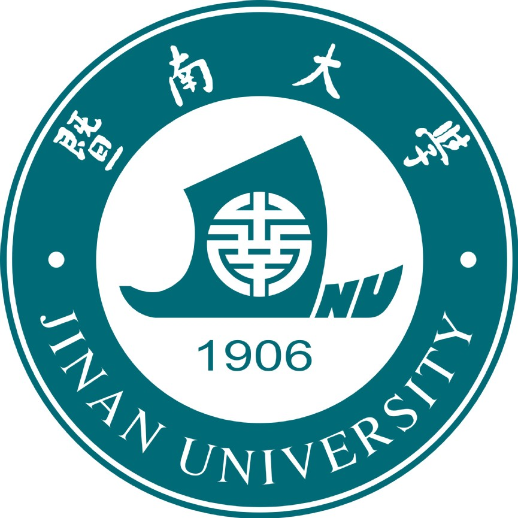

Zhengyuan Cai (蔡正源)
Ph.D. candidate
Supervisor: Prof. Jiahuan Zhou
Wangxuan Institute of Computer Technology, Peking University.
Beijing, China
E-mail: caizhengyuanATstu2023.jnu.edu.cn
I am a Ph.D. candidate at the Wangxuan Institute of Computer Technology, School of Computer Science and Technology, Peking University, supervised by Prof. Jiahuan Zhou. I will obtain a Bachelor's degree in Mathematics and Applied Mathematics from Jinan University in 2027. Previously, my research focused on parameter-Efficient Continual Learning and noisy label learning.
Education


Awards and Honors
Second-Class Excellent Student Scholarship, Jinan University (暨南大学优秀学生二等奖学金), 2026
Third-Class Excellent Student Scholarship, Jinan University (暨南大学优秀学生三等奖学金), 2025
Innovation Star Model Award, Jinan University “5A Excellence Leadership Program” (暨南大学“5A 卓越引领计划”创新之星标兵奖), 2025
Academic Rising Star Scholarship (学术新星奖学金), 2025
National Silver Award, China International College Students’ Innovation Competition (中国国际大学生创新大赛国家级银奖), 2025
Research Interests
Continual Learning
Lifelong Person Re-Identification
Noisy Label Learning
Prompt Learning
Publications
Kunlun Xu#, Zhengyuan Cai#, and Jiahuan Zhou*, “Cross-Domain Knowledge Separation and Positive Transmission for Noisy Domain Incremental Learning”, in Proceedings of the Fortieth Annual Conference on Neural Information Processing Systems (NeurIPS'26), Sydney, Australia, Dec. 6–12, 2026. [pdf]
Note: * indicates the corresponding author; # indicates equal contribution.